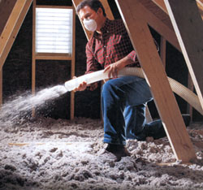
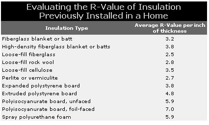
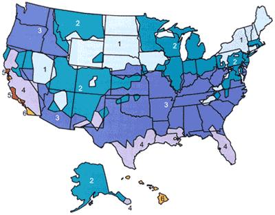
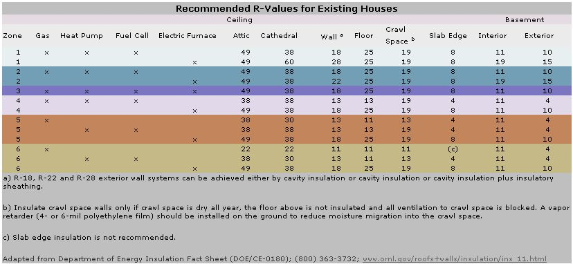
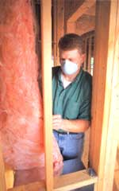
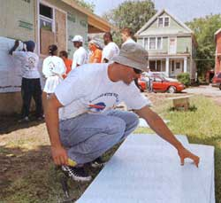
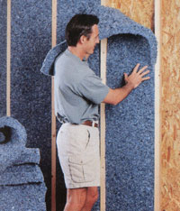

Insulation serves one primary function: It retards heat flow into and out of homes. During sultry summers, insulation helps a building keep its cool. In the depth of bone-chilling winters, it helps hold the heat inside our homes.
Choosing the correct amount and kind of insulation, and properly installing it in the walls, ceilings, floors and foundations of new and existing homes will make your home more energy efficient and economical, and much more comfortable. And, if extra insulation is paired with airtight home design and cost-effective, passive-solar heating and cooling measures, you can greatly reduce, even eliminate, the need for additional heating or cooling, and free yourself from utility-supplied power.
Insulation falls into four categories: (1) loose-fill, (2) blankets (rolls and bats), (3) rigid foam and (4) liquid foam. Loose-fill and blankets are typically used in attics, between roof rafters, in wall cavities of wood-frame homes and between floor joists. Rigid foam insulation usually is applied externally. Liquid foam is most often used in wall cavities or to seal air gaps in a home's envelope.
When selecting insulation to use in your home, consider the following factors: long-term performance; insulations' raw materials, including recycled content; environmental impacts from its production; and health impacts to installers and your family.
When you're ready to retrofit your home for insulation, first find out how much insulation is already in place. To measure attic insulation, measure the insulation's thickness, then determine the R-value (from the table below) by multiplying the measured thickness by the R-value for the type of insulation you have.
Once you've determined the R-value of the existing insulation, you'll need to figure out how much more you'll need. Find your zone and the recommended R-values on the table on Page 65. Subtract the R-value of your current insulation from the recommended R-value to figure out how much insulation you need to add. For example, if your cellulose attic insulation measures 10 inches thick, you have an R-value of about 35. If you live in Zone 2 and heat with gas, the U.S. Department of Energy recommends an R-value of 49 in your attic.
Next, determine if you have the space available to add the insulation you need. This is done by taking the R-value you would like to achieve and dividing it by the R-value per inch of the insulation material you'd like to use. This gives you the approximate thickness needed. In this example, to achieve an R-value of 49, you'll need an additional R-14 in insulation, or 4 inches of loose-fill cellulose insulation (14 divided by 3.5 equals 4). Most serious energy-efficient builders strive to achieve levels higher than these minimum recommendations.
Fiberglass, cellulose and rigid foam board are most commonly used as home insulation because they are economical, readily available and familiar to most contractors.
Fiberglass is made from one of the world's most abundant materials, silica sand, which is heated to high temperatures to produce glass and then spun into microthin fibers. The most popular insulation product on the market today, fiberglass comes in two forms: blankets (batts and rolls) and loosefill. Paper-backed blankets are installed in wall cavities and between floor joists. Unbacked blankets and loosefill fiberglass are installed in ceilings. Loosefill fiberglass insulation also can be blown into wall cavities.
Although these products are fairly inexpensive and effective, they pose some health risks: Cancer warnings are posted on most fiberglass insulation sold in the United States.
One of the chief problems with this insulation is that microscopic slivers of glass may break loose during handling and installers may inhale it. Fibers can irritate the lining of the respiratory tract and may become lodged in lung tissue, causing a buildup of fibrous tissue that reduces lung capacity.
Laboratory studies show that the fibers may shear DNA molecules in the nuclei of cells, causing mutations that could lead to lung cancer. Although inhalation of fibers during installation can be prevented by wearing a respirator or a certified dust mask, all three principal U.S. manufacturers of fiberglass insulation have addressed the problem by sealing fiberglass batts in a perforated polyethylene or polypropylene sheeting, which also acts as a vapor barrier.
Standard fiberglass insulation has typically been made with a formaldehyde-based binding agent, which holds the fibers together. But this binder outgases (gives off chemical vapors) and can affect both installers and home occupants. Besides being a skin, eye and respiratory irritant, formaldehyde is classified as a probable human carcinogen by the U.S. Environmental Protection Agency.
Some manufacturers, such as Owens Corning and Johns Manville, have introduced formaldehyde-free fiberglass insulation products. Miraflex, an Owens Corning product, contains two types of glass fiber that expand and contract at different temperatures. This causes the fibers to curl and twist, which helps them bind together without chemicals. Miraflex is soft and nonirritating to skin. Moreover, the fibers have greater tensile strength than those in standard fiberglass insulation. Johns :Manville has replaced the formaldehyde binding agent in all of its products with a nontoxic acrylic resin.
Another advance in fiberglass insulation is the greater use of recycled glass. Fiberglass manufacturers typically use 30 percent to 40 percent recycled glass in their products.
Manufacturers now also produce high and medium-density fiberglass batts. In these more tightly packed batts, smaller air spaces between the fibers reduce air circulation, increasing resistance to heat flow, known as the R-value. A higher R-value means better energy efficiency. Standard medium-density fiberglass blankets for 2x4inch walls, for example, have a nominal rating of R-11, while the comparable high-density blankets are rated at R-15. Higher-density butts also are available for 2x6-inch walls and for attics.
Higher-density batts cost about 20 percent more than standard fiberglass butts, but the initial costs will be paid back in energy savings. Some builders have taken to cramming oversized standard fiberglass batts into wall and ceiling spaces. A standard R-19 butt for a 2x6-inch wall can be forced into a 2x4-inch wall, resulting in an R-14 wall with nearly as much insulation value as a high density 3.5-inch batt, says environmental building expert Alex Wilson of BuildingGreen. This approach also can be used in closed ceiling spaces, but requires vent spaces to prevent moisture from accumulating in the insulation. High-density butts do not require venting.
Fiberglass doesn't shrink, won't burn and is unappealing to insects. On the negative side, fiberglass blankets do not seal wall and ceiling cavities very tightly, and unless installers use encapsulated batts, a vapor barrier is required to protect the insulation from moisture. Fiberglass also settles, resulting in a decline in R-value over time. Like other forms of insulation, its R-value drops dramatically when it becomes moist.
Cellulose. Made from recycled newspaper and (sometimes) small amounts of cardboard shredded into a fluffy mass, cellulose is sprayed slightly damp, or blown dry, into wall and ceiling cavities, as well as attics. Loose-fill cellulose insulation is typically treated with boric acid to thwart mold, increase fire resistance and repel hungry insects. Some manufacturers add a moisture-activated acrylic binder that causes the cellulose particles to adhere better, which reduces settling.
Cellulose insulation is one of the most environmentally friendly insulation choices, and because of its economical price and availability, it easily competes with fiberglass. Fed by the massive waste of a paper-hungry society, recycled cellulose insulation manufacturing facilities are helping put mountains of discarded newspapers and cardboard to good use. Cellulose insulation is generally less expensive (up to 25 percent) than fiberglass butts, and provides more insulation per inch (R-3.2 per inch) than low-density fiberglass (R-2.2 per inch).
Cellulose also poses fewer health risks to installers and home owners. Although blowing or spraying cellulose into wall and ceiling cavities produces dust, there are no fibers found in cellulose that are potentially cancer-causing. A simple face mask or respirator protects installers.
Cellulose insulation does have some disadvantages. Dry-blown cellulose may settle and sag, creating air spaces. It also can absorb moisture, decreasing its R-value over time. If it remains damp for prolonged periods, cellulose can mold and rot. With its use of acrylic binders, wet-blown cellulose is supposed to solve the problems of settling and sagging. Cellulose is less expensive, but installation costs may be higher than those for fiberglass butts.
Mineral Wool. For many years, mineral wool was the most widely used insulation in the United States, Canada and Europe. Mineral wool insulation is similar to fiberglass, except the fibers in mineral wool come from stone or from iron-ore blast furnace waste. If natural stone, such as basalt or diabase, is used, the product is called rock wool. If iron-ore waste or slag is used, the finished product is known as slag wool. Roxul, a European company, produces a mineral wool insulation containing equal amounts of rock wool and slag wool. Fibrex, based in Aurora, Illinois, produces mineral wool insulation blankets, which can fit between walls, studs or ceiling rafters, made from 92 percent recycled materials.
Although mineral wool is much heavier and costs more than fiberglass and cellulose, it does offer some substantial benefits. Mineral wool is moisture-resistant and maintains its insulative properties when wet. It also is a good acoustic insulator and is more resistant to heat than fiberglass. Mineral wool insulation is noncombustible, withstanding temperatures greater than 1,800 degrees, and acts as a fire barrier, which can slow a house fire. Fiberglass insulation, in contrast, melts at slightly over 1,100 degrees, and cellulose combusts during house fires. During handling, however, small pieces can break loose from mineral wool batting, raising health concerns if the fibers are inhaled.
Rigid Foam Insulation. One form of insulation whose popularity has grown steadily in recent years is rigid foam, also called foam board. Rigid foam insulation is typically used to insulate foundations and slabs. It also is applied on exterior roofs and walls, and may substitute for loose-fill or batts in walls, roofs and floor cavities, although it must be tightly fitted to prevent air infiltration.
Rigid foam insulation has insulation values nearly twice the R-value per inch of standard fiberglass and cellulose. Some rigid foam products are ideally suited for foundation insulation because they are water resistant and can be buried in the ground on a foundation's exterior.
There are three types of rigid foam insulation: (1) expanded polystyrene (EPS); (2) extruded polystyrene (XPS) and (3) polyisocyanurate, also called polyiso. Although most rigid insulation is made from various polymers (foam plastics), builders also can purchase rigid insulation made from basalt rock and slag (the same materials used to make some mineral wool insulation products) from Roxul ( www.roxul.com ).
Expanded polystyrene (EPS), also known as beadboard, is the least environmentally damaging product in the rigid foam board family because it is not manufactured using ozone-depleting chemicals. Most people are familiar with EPS, as it is used to make coffee cups and packing beads for shipping.
EPS is made from polystyrene beads mixed with liquid pentane, a hydrocarbon used as a "blowing" or expansion agent, which expands to form millions of tiny bubbles in the finished product. The agent diffuses out of the foam, and the spaces fill with air. Air is a poor conductor of heat, so the millions of tiny bubbles effectively block heat transfer through the foam. (In Insulfoam, steam, rather than pentane, is used to produce air spaces.)
EPS can be molded into large sheets with R-values ranging from about 3.8 to 4.4 per inch, depending on the density of the material. However, air spaces in EPS can accumulate and retain water. Because water is a good conductor of heat, some form of moisture barrier may be required to prevent this problem, especially when EPS is used around foundations. To make the product more durable, waterproof, and thus suitable for in-ground use, EPS is now being manufactured with thin-foil and plastic facings.
Also known as blueboard, extruded polystyrene (XPS) is a closed-cell insulation board made from polystyrene and a hydrochlorofluorocarbon (HCFC) expansion agent. HCFCs are much less damaging to the ozone layer than their chlorofluorocarbon (CFC) predecessors, but this new generation of blowing agents still releases chlorine atoms when exposed to sunlight, destroying ozone molecules in the stratosphere. Whereas a molecule of CFC destroys 100,000 ozone molecules, a molecule of HCFC only destroys about one-fifth as many-20,000 molecules.
XPS is more expensive than EPS, but it has a slightly higher R-value, about R-5 per inch. XPS also tends to be more consistent in density, has a higher compressive strength than EPS and is much more resistant to moisture.
Manufactured using HCFC-141b, polyisocyanurate is the least environmentally friendly foam-board insulation. Although less damaging to the ozone layer than CFCs, HCFC141b is the worst of the new generation blowing agents. Several companies now offer HCFC-free polyiso, in anticipation of HCFC's eventual phase-out.
Polyiso offers superior insulation properties-the highest of the rigid foam insulation materials-with an average R-value between R-6.5 and R-8 per inch. Its various facings, such as plastic or aluminum, further increase its resistance to heat.
Like other forms of insulation, polyiso suffers from thermal drift, a gradual deterioration of R-value over time. Out of the mold, polyiso foam boards are rated about R-9 per inch, but within two years the R-value declines to its stable insulation value, about R-7 per inch. (Foil facing adds about R2 to the insulation.)
Polyurethane/Spray Foam Insulation. In the '70s and `80s, rising heating prices motivated homeowners to retrofit their homes with insulation. Many people injected polyurethane foam into wall cavities through holes drilled in the finished walls. However, polyurethane foam soon began to cause problems. Formaldehyde, which was used as a binding agent in the foam, outgassed from the walls, causing a host of health problems ranging from sore throats to skin rashes.
Polyurethane products also relied on a blowing agent known as CFC-11, a potent ozone-destroying chemical. And many found that the foam offered incomplete protection, as it failed to fill cavities evenly, resulting in uninsulated regions in walls.
Today, manufacturers use carbon dioxide gas as the blowing agent. One of the leading polyurethane insulation products is Icynene. It is applied by a trained installer and is sprayed in a paint-thin layer into open wall cavities.
Icynene adheres readily to all surfaces it contacts and quickly expands to approximately 100 times its original volume, filling cavities. Excess can be trimmed off with a handsaw. Although Icynene is typically sprayed into open cavities before wallboard or paneling is applied, it can be applied in closed wall cavities. A carefully measured amount is poured into the cavity through a small opening in the wall. The product expands from the bottom up, filling the voids.
Icynene provides about R-3.6 per inch. Because it forms an airtight seal and also is resistant to water vapor, Icynene eliminates the need for vapor barriers in standard stick-frame construction. Further adding to its benefits, Icynene does not settle, sag or shrink. Unlike most other insulation materials, Icynene's R-value does not decline over time. Additionally, its production uses no CFCs or HCFCs, the foam does not outgas harmful chemicals and it offers no nutritive value to termites.
Introduced in the late 1970s, Air Krete, a cementitious foam product containing magnesium oxide, is one of the few insulation products that chemically sensitive individuals seem to tolerate. Like other spray-in foam insulation materials, Air Krete is stable and does not shrink or settle after being applied. It supplies about R3.9 per inch, but must be applied by people trained in its application.
Fiberglass, cellulose and rigid foam insulation are readily available and are the ones most commonly installed. But some other materials are worth consideration, including cotton, wool, straw and strawclay.
Cotton. Available in loose-fill and batts, cotton insulation has the same R-value per inch as cellulose insulation. Cotton insulation is relatively harmless to the installer and home occupants. It is safe to handle and won't shed fibers like fiberglass or rock wool insulation. Most cotton insulation is treated with a flame retardant, but is manufactured without formaldehyde binders. On a batt-for-batt basis, cotton insulation can be at least twice as expensive as fiberglass, although the price fluctuates depending on who's doing the installation. While cotton insulation is a natural product and safe from a human health standpoint, cotton is one of the most chemically intensive crops grown in the United States.
Two major cotton insulation manufacturers, Inno-Therm and Bonded Logic, use recycled cotton fiber trimmings in their products. UItraTouch cotton insulation is made with 85 percent postindustrial recycled content fiber and 15 percent plastic fiber. The cotton is treated with borate for fire and insect resistance.
Sheep's wool is a superb insulator, having a slightly higher R-value than standard fiberglass. One of wool's greatest benefits is that it insulates when wet, a claim that can't be made about many other forms of insulation. Wool is naturally flame resistant, too. Although wool can be damaged by moths, it contains lanolin, a naturally occurring oil that protects it from these insects. To further safeguard wool insulation, some individuals add cedar shavings.
Wool insulation is common in New Zealand, where sheep outnumber people by a wide margin. In North America, you may be able to purchase wool insulation batts from green building suppliers such as Planetary Solutions in Boulder, Colorado, and Eco Wise in Austin, Texas. New Zealand-based Woolhouse International produces a product called Thermofleece Natural Wool insulation, which is sold in the United States. Thermofleece contains boric acid as a flame retardant.
Straw. Some natural builders install straw bales or loose straw in their ceilings to provide high levels of insulation. Straw bales are inexpensive and readily available. Loose straw is lighter than bales and reduces the need to fortify roof framing. To reduce fire potential, straw can be treated with natural flame retardants such as boric acid or clay slip, a watery solution of clay and dirt.
If you're building a new house, using straw bales as insulation and in-fill for the walls can result in an estimated total R-value of 42 for a wall made of 18-inch-wide bales.
Straw-clay. Another natural insulation is a material called straw-clay, made by mixing loose straw and a clay slip. Packed into wall forms or ceilings and left to dry, straw-clay creates a thick, insulated wall that is naturally fire resistant and mold and mildew repellent. Its R-value is estimated to be between R-2 to R-3 per inch.
ZIP-Code Insulation Program is a free, Web-based computer program that calculates the amount of insulation appropriate for your house.
A do-it-yourself energy audit tool, the Home Energy Saver shows how you can save money by investing in energy-efficient appliances and retrofits.
Many states and municipal utilities offer rebates and other financial incentives for retrofitting homes with insulation. To find out, call your local utility or state energy conservation office.
|
 COURTESY U.S. GREENFIBER To find out how much insulation your home needs, first find your region on the map and note the Zone number. Then check the chart in the article to see the recommended R-value of insulation for your attic. Also check the next image in this Image Gallery - it lists the recommended R-values for walls, crawl spaces, basements and more. |
 U.S. DEPARTMENT OF ENERGY To find out how much insulation different sections of your home needs, first find your region on the map in the previous image in this Image Gallery and note the Zone number. Then look up your Zone and the different sections of your home in the chart above. |
 U.S. DEPARTMENT OF ENERGY A new class of fiberglass products, made without formaldehyde binders, eliminates the product's potential for outgassing. |
|
 EYEWIRE Also known as blueboard, extruded polystyrene is well-suited for use under siding. |
 SHARON CANTILLON/AP Cotton insulation is a soft, safe way to insulate your home. |
 COURTESY BONDED LOGIC, INC. |
|
 |
|
|